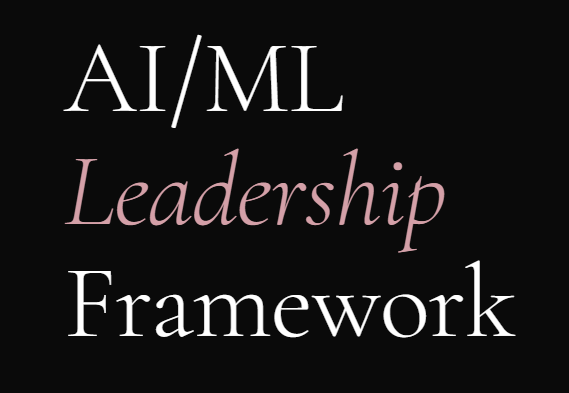

A personal leadership framework outlining mission, values, objectives, and execution strategy for AI/ML integration.
Objective: Define the kind of AI/ML leader I intend to be, grounded in discipline, accountability, and ethical execution.
Process: Built through reflection, leadership development, and structured planning.
Value: Demonstrates ability to connect leadership philosophy with real operational execution.
Open Full Framework